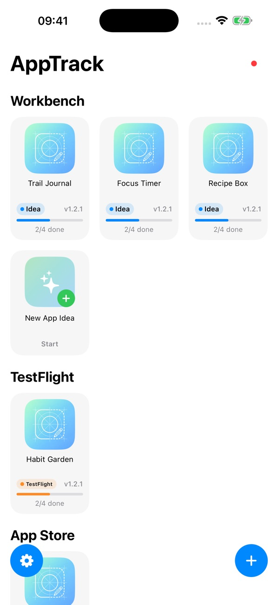
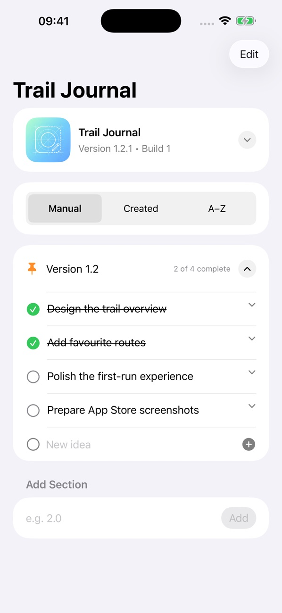
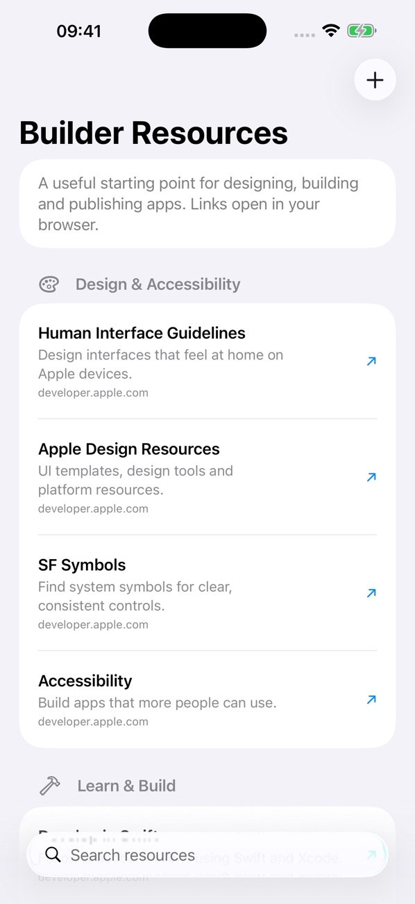

Organise your app ideas
Give each app its own project and recognisable icon. Keep new concepts alongside the apps you are already building, so the next good idea has somewhere to land.
Capture the first spark, organise development notes and plan your next release. AppTrackr brings your app ideas, tasks and project stages together across iPhone, iPad and Mac.
Give each app its own project and recognisable icon. Keep new concepts alongside the apps you are already building, so the next good idea has somewhere to land.
Group projects by release stage, from your workbench through TestFlight, the App Store and publication. See where each app stands at a glance.
Track version and build numbers, organise tasks and notes into development sections, and mark work complete. Pin the sections you want to keep within reach.
Save the details behind your app alongside the work it needs. Add a website to a published project, and use built-in Apple design and development resources as you build.
A look at your project dashboard, release planning and the resources that help you keep building.



Start free, then choose Pro when you need space for a larger collection of app ideas.
Bring your first projects together, organise development notes and plan the work ahead.
Choose a monthly subscription or a one-time lifetime purchase. Prices, trial eligibility and purchase details are shown in the app before you buy.
Getting started, everyday questions and a way to reach us if you need help.
AppTrackr works across iPhone, iPad and Mac. Check the App Store listing for the current software and device requirements.
Use the same iCloud account on your devices to sync projects. If a project has not appeared, check your iCloud sign-in and internet connection on each device.
Existing projects remain available to view and edit if your Pro access ends. The free version lets you create up to 10 app ideas.
Email support@cakesquared.co.uk. For a bug report, include your device model, software version and what happened so we can help.
Last updated: September 2026
AppTrackr does not collect personal data. App Store payments, if any, are handled by Apple.